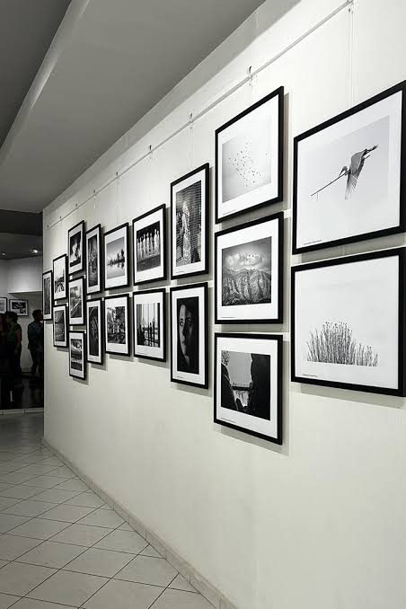

About the Project
The Static Gallery Project is a community-driven digital archive built entirely on lightweight, static frontend architecture. We manually curate, code, and host exhibition spaces for independent local photographers to present their series with absolute clarity—completely free from social media algorithms, compression, or clutter.
Get Involved / Submit
